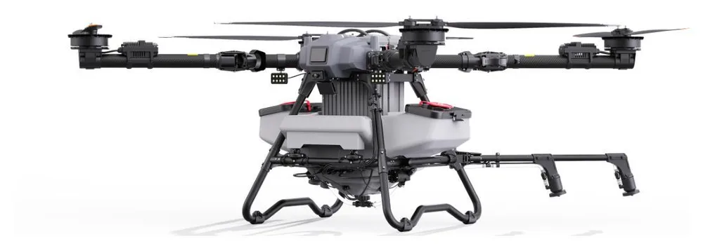
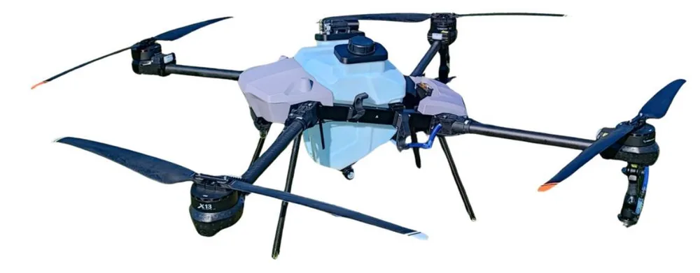

Drone Agri: sprayer dan penebar
Sprayer industri dengan perencanaan jalur presisi untuk pertanian dan perkebunan.

Sprayer 80 liter
Untuk penyemprotan dan penebaran di lahan sangat luas.
80 kgmuatan
80 Ltangki
IP65tahan air
| Berat lepas landas maks. | 150 kg |
|---|
| Kapasitas penebaran | 120 liter |
|---|
| Daya tahan terbang | hingga 25 menit |
|---|
| Kecepatan maks. | 13,8 m/s |
|---|
| Ketinggian maks. | 3.500 m |
|---|
| Jarak data link | 2 km (terbang rendah standar) |
|---|
| Tahan angin | 6 m/s |
|---|
| Dimensi terlipat | 1146 × 1146 × 1058 mm |
|---|
| Dimensi terbuka | 3283 × 3283 × 1076 mm |
|---|

Sprayer 50 liter
Ringkas dan tangguh untuk kebun dan lahan menengah.
50 kgmuatan
50 Ltangki
IP67tahan air
| Berat lepas landas maks. | 100 kg |
|---|
| Kapasitas penebaran | 50 kg |
|---|
| Daya tahan terbang | hingga 17 menit (muatan penuh) |
|---|
| Kecepatan maks. | 21 m/s |
|---|
| Ketinggian maks. | 3.500 m |
|---|
| Jarak data link | 15 km |
|---|
| Tahan angin | hembusan level 5 |
|---|
| Dimensi terlipat | 1113 × 781 × 841 mm |
|---|
Dilengkapi avionik lengkap: GNSS ganda, stasiun darat RTK, radar altimeter, dan autopilot, untuk perencanaan jalur dan cakupan yang presisi. Remote control layar 7 inci. Rangka lipat.